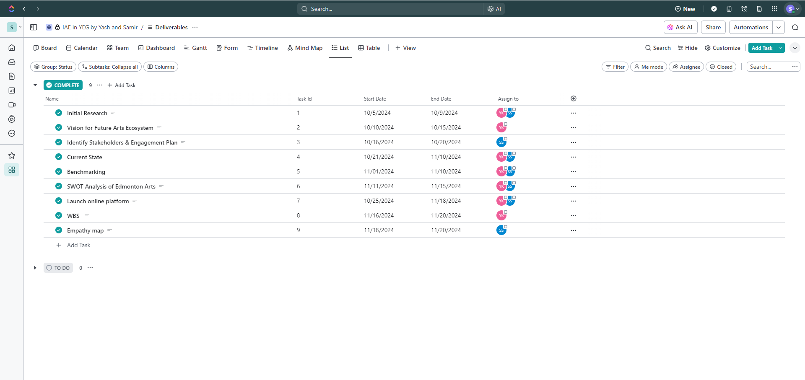
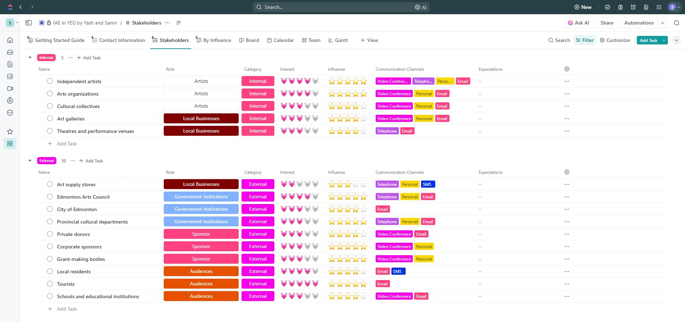
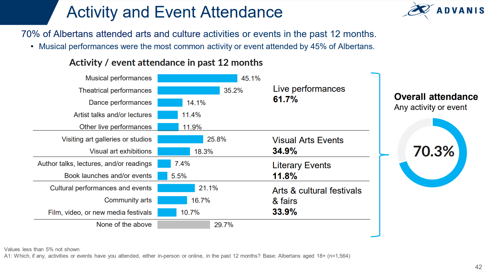
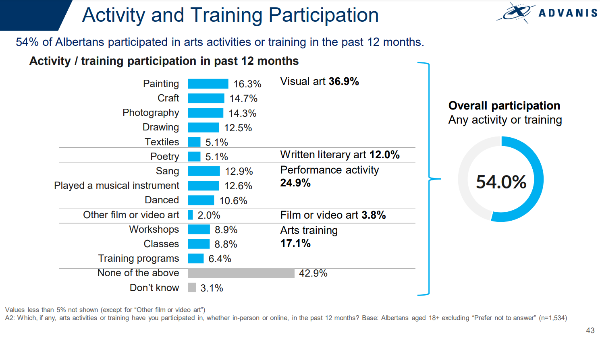
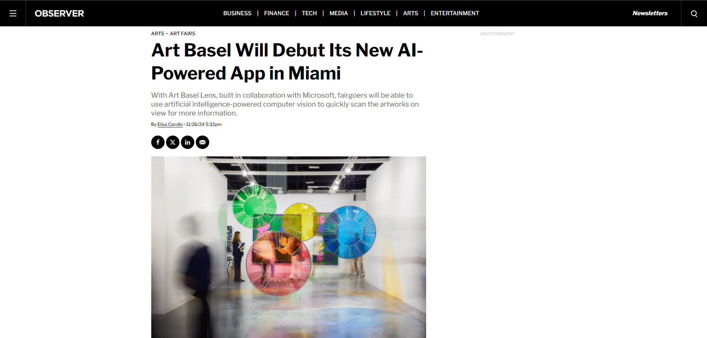
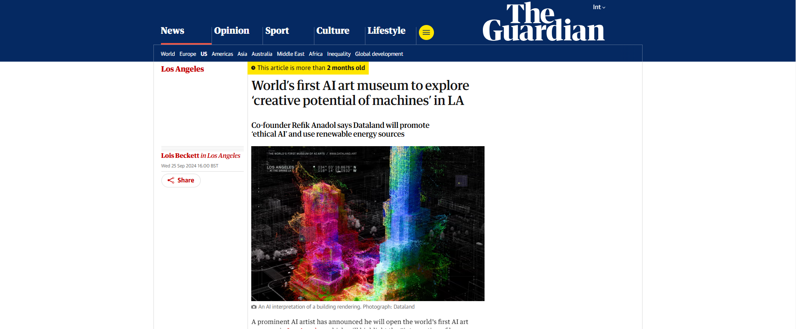
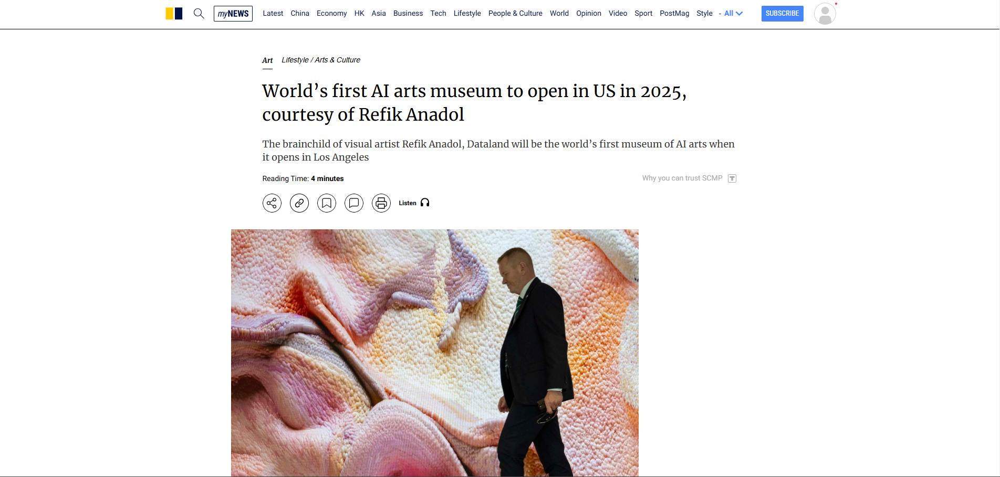
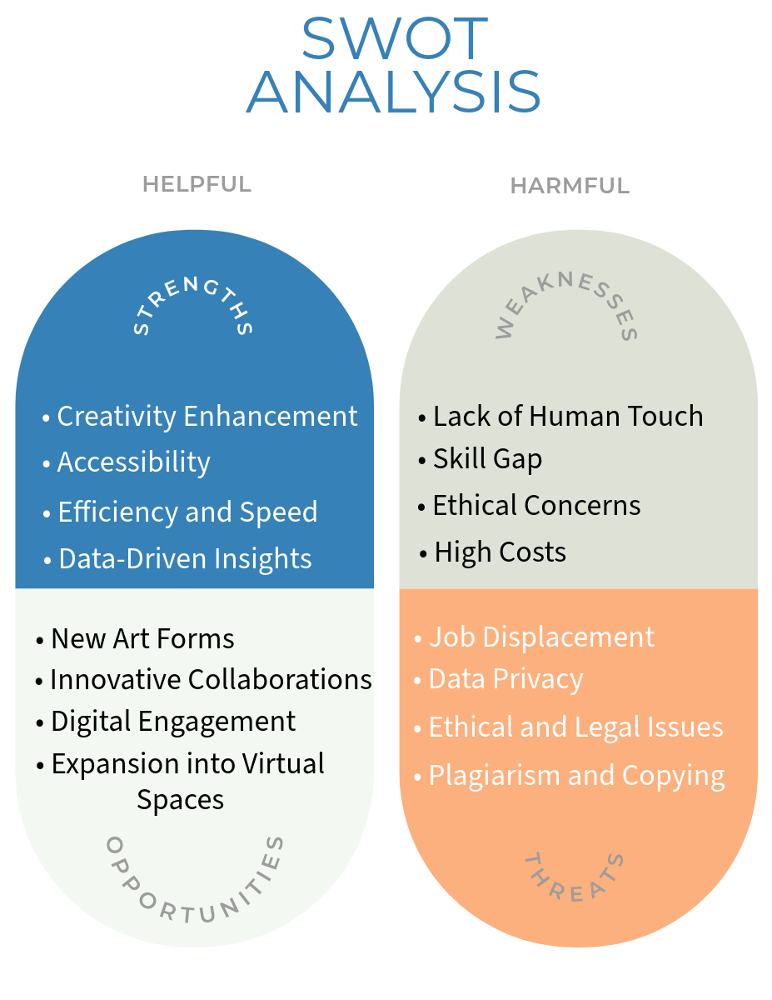
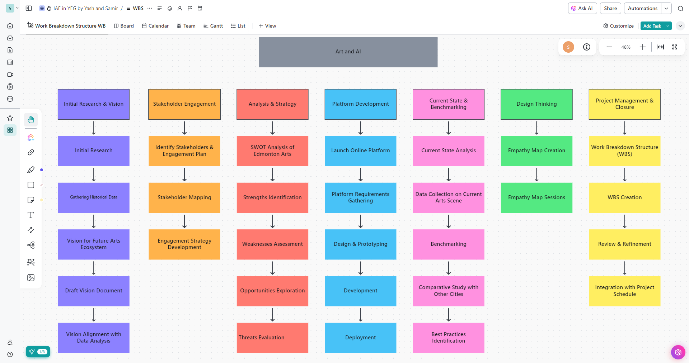
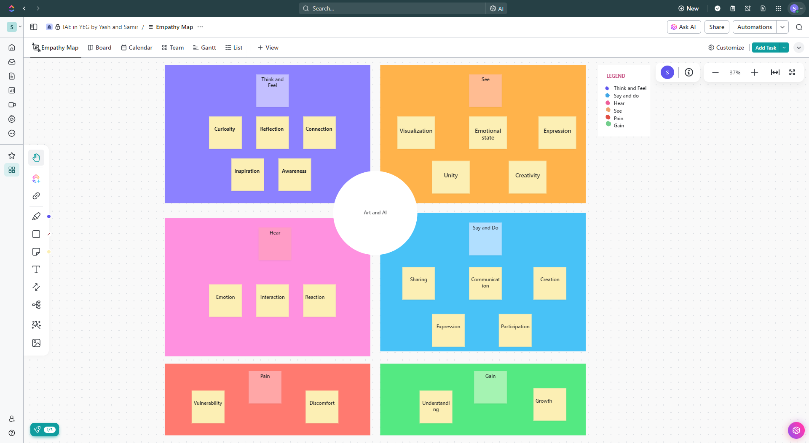

Edmonton’s arts sector is facing important challenges.
Rising costs, hesitant audiences, and uncertain funding make this year crucial for the city’s creative community.
In our case study, we will explore Edmonton’s arts scene, compare it to other cities, and analyze what the community needs.
Our goal is to develop practical strategies that can help bring about positive change.
We believe the insights we gather will be key to revitalizing the arts sector so it can not only survive but also thrive in the future.
Schedule

Risks
• Scope Creep: Uncontrolled expansion of project goals, leading to delays and increased costs. Mitigate with strict scope management.
• Technical Challenges: Difficulties in integrating AI with art platforms. Mitigate by ensuring technical expertise and early assessment.
• Ethical and Legal Issues: Concerns over data privacy and AI's impact on art authenticity. Mitigate with clear policies and ethical guidelines.
• Stakeholder Disengagement: Lack of support or understanding from stakeholders. Mitigate through regular updates and inclusive decision-making.
• Public Resistance: Low acceptance of AI art. Mitigate by educating the public on AI's role in enhancing, not replacing, human creativity.
Stakeholder Analysis

Current State




Reference https://open.alberta.ca/publications/survey-of-albertans-online-report
Benchmarking
New York
• Funding: AI data analytics streamline grant processes.
• Community Engagement: AI-powered virtual guides enhance museum experiences.
• Audience Development: AI-driven marketing tailors programs to audience preferences.
Los Angeles
• Funding: Machine learning optimizes grant distribution.
• Community Engagement: AR and AI tools engage visitors with interactive experiences.
• Audience Development: AI analyzes social media to attract diverse audiences.
Key Performance Indicators (KPIs)
• Attendance Rates: AI tracks and predicts visitor trends.
• Grant Funding Levels: AI optimizes funding allocation.
• Viewer Demographics: AI analyzes audience data for targeted programs.
• Community Participation: AI measures digital engagement.
• Social Media Engagement: AI monitors and analyzes social media activity.
Analysis Report
• AI-Enhanced Funding: Streamline grants with AI.
• Tech-Driven Community Engagement: Use AR and AI for interactive art.
• Data-Driven Audience Development: Tailor programs with AI analytics.
Future State

The Art Basel Companion and Lens use Microsoft’s AI to provide instant information about artworks and artists through scanning. Users can also share their thoughts on social media, enhancing content creation at the fair.
Reference
https://observer.com/2024/11/art-basel-app-ai-microsoft-miami-artificial-intelligence/
https://fadmagazine.com/2024/11/26/new-ai-powered-art-basel-app-launched-in-time-for-art-basel-miami-beach/

Reference https://www.theguardian.com/us-news/2024/sep/25/ai-art-museum-los-angeles-dataland

SWOT

WBS

Empathy Map
